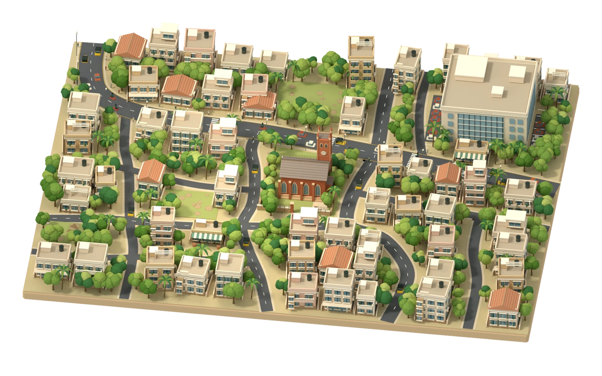
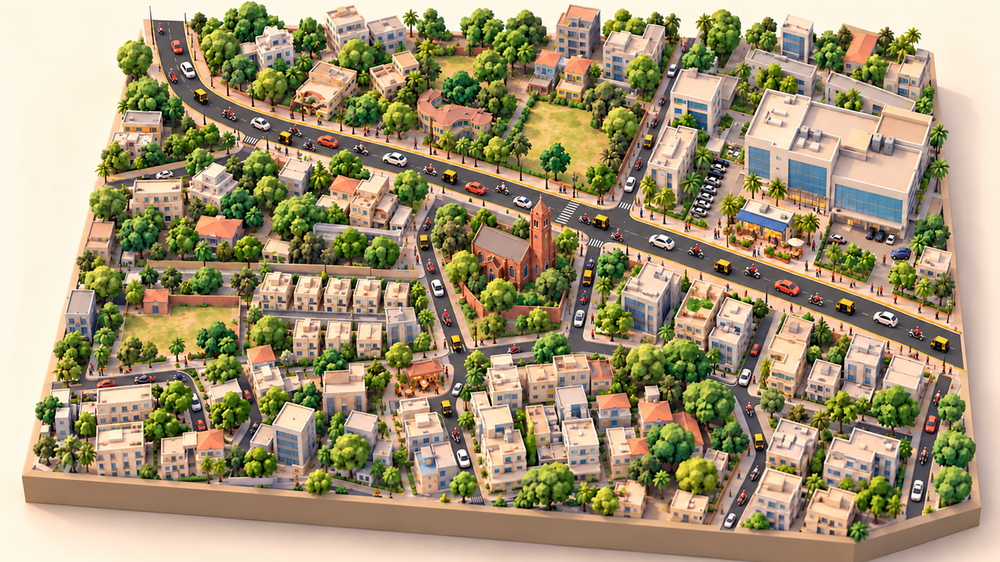
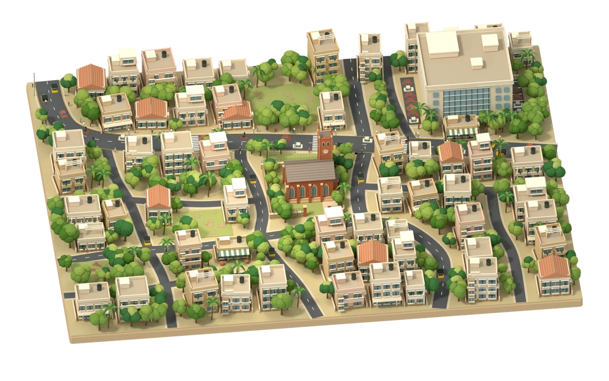
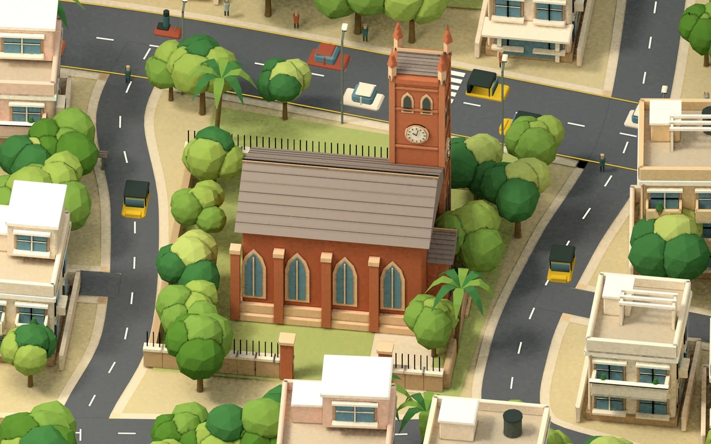
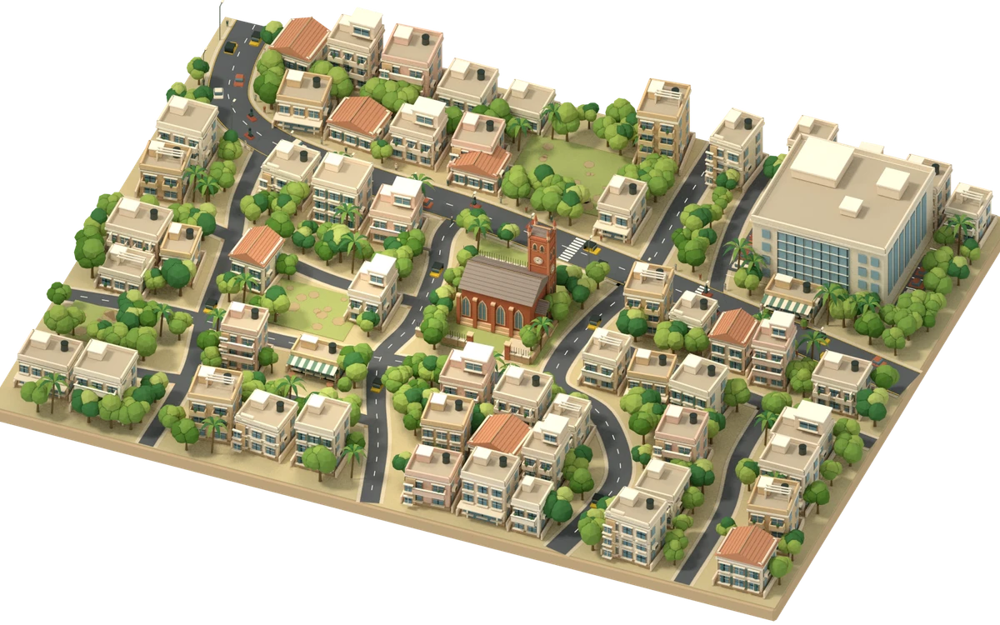

CAMP, PUNE · AN ILLUSTRATIVE RECONSTRUCTION
A place worth
looking closer at.
Before the data, there’s a neighbourhood.
A first look at the world our story will live in.

CAMP, PUNE · ILLUSTRATIVE RECONSTRUCTION Preparing the city…Drag gently to rotate. Scroll to move down the page.
THE VISUAL CHECKPOINT
From illustration to a place.
The reference sets the direction.
The model adds another angle.




Review notes & live measurements
This is an illustrative neighbourhood inspired by Camp. Building placement and café availability are not a verified map or property listing. The eight story beats and portfolio integration are the next review stage.
- Model download
- —
- Visible triangles
- —
- Draw calls
- —
- Frame interval, median / 95th percentile
- Measuring…
- Current view
- —
- Browser viewport
- —
Frame measurements describe this browser session, including any background-tab throttling. They are not a mobile-device benchmark.